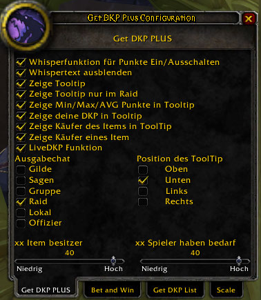

GetDKP
Contents
Einführung
GetDKP ist für die Ingame EQDKP Punkteanzeige in World of Warcraft zuständig. Es versorgt euch mit alle wichtigen Information aus eurem DKP im Spiel. GetDKP zeigt die Punkte und Items an, welche die Spieler im Raid bekommen haben. Außerdem könnt ihr hiermit Ingame Auktionen während des Raids machen bzw. automatisieren, was viel Zeit erspart.
Installation
Download
Der offizielle Download auf Curse findet ihr hier.
Installation in World of Warcraft
Nach dem ihr GetDKP runtergeladen habt, müsst ihr den Ordner in den Addon Ordner von World of Warcraft entpacken bzw kopieren.
GetDKP
GetDKP Configuration
GetDKP Config Plus

{kind=link}
1. Whisperfunktion ein-/ausschalten
Die Whisperfunktion ist für Spieler gedacht, die kein GetDKP installiert haben. Damit können sie per whisper an dich ihre DKP Punkte abfragen. Dazu müssen sie dich mit 'dkp' anwshipern.
2. Whispertext ausbelnden
Hiermit könnt ihr die whisper, die für die Whisperfunktion nötig sind, in eurem Chat ausblenden.
3. Zeige Tooltip
Der Tooltip zeigt alle Spieler an, die noch Bedarf auf ein Item haben. Der Tooltip geht dann immer auf wenn ihr einen Itemlink anklickt.
4. Zeige Tooltip nur im Raid
Hier könnt ihr einstellen, dass der Tooltip immer nur dann mit aufgeht, wenn ihr in einem Raid seid.
5. Zeige Min/Max/Avg im Toolitp
Hiermit wird die Anzeige der Minimal-, Maximal- und Durchschnittsgebote ein-/ausgeschaltet.
6. Zeige deine DKP im Tooltip
Zeigt deine eigenen DKP im Tooltip.
7. Zeige Käufer des Items im Tooltip
Zeigt die Käufer eines Item im Tooltip an.
8. Zeige Käufer eines Items
9. LiveDkp Funktion
Hier kannst du die Livefunktion vom DKP ein und auschalten. Die Livefunktion zieht bei allen die GetDKP installiert haben, im Raid die DKP ab die für ein Item ausgegeben wurden. Die Daten des EQDKP auf eurer Homepage werden hiervon nicht beeinflust.
10. Ausgabe Chat
Hier wird der Chat eingestellt der für sämtliche Ausgaben vom GetDKP genutzt wird.
11. Position des Tooltips
Die Position des Tooltips im Bezug auf den Itemtooltip.
12. xx Item Besitzer
Hier kannst du einstellen, wie viele Besitzer eines Items maximal im Tooltip angezeigt werden.
13. xx Spieler haben Bedarf
Hier kannst du einstellen wie viele Spieler maximal, die noch Bedarf auf das Item haben, im Tooltip angezeigt werden.
GetDKP Config Bet and Win
{kind=link}
{kind=link}
Bet and Win ist ein umfangreiches Tool im GetDKP. Hier kannst du die Konfiguration von Bet and Win vornehemn. Bet and Win ermöglicht es euch, Versteigerungen der Items im Spiel vorzunehmen. Dabei achtet Bet and Win, je nach Regel die ihr eingstellt habt, darauf ob ein Spieler genug Punkte besitzt oder ob es gleich hohe Gebote gibt und startet anschließend automatisch eine roll 100 Auswertung der Spieler. Man kann hier auch einen Countdown einstellen, der die Zeit, in der Gebote angenommen werden, begrenzt. Außerdem kann hier eingestellt werden, ob der Loot eines Mobs automatisch im Chat gepostet wird und ob der Loot im Bet and Win Fenster angezeigt wird. Von diesem Button aus kann man dann direkt die Auktion starten. Die Erklärungen zu den einzelnen Regeln findet ihr im Spieler oben links unter dem Brieficon. Alle eingegebenen Werte müssen mit einem Return abgeschlossen werden, sonst werden die Werte nicht übernommen.
GetDKP Config List
{kind=link}
1. Nur Spieler im Raid anzeigen
Hier wird eingestellt, ob in dem GetDKPList Fenster nur die Spieler im aktuellen Schlachtzug angezeigt werden oder alle Spieler die im DKP angegeben sind. Sollte man selber nicht in einem Schlachtzug sein, so wird immer die komplette Liste angezeigt.
2. Zeige Itemfenster
Hier wird eingestellt, ob das Itemfenster aufgeht wenn man mit der Maus auf einen Namen klickt oder über den Namen fährt.
3. Zeige alle TokenItems in den Set Fenstern
Hier kann man einstellen, ob man alle TokenItems die ein Spieler bekommen hat angezeigt werden oder nur die, die zum Set gehören.
Die Datenübermittlung ist abhänig davon, ob man ein A im Schlachtzug hat oder nicht. Dadurch entstehen unterschiedlich Ansichten. Fragt eure Raidleitung, ob ihr ebenfalls ein A bekommen könnt.
Ein Spieler mit einem A kann dann entscheiden, ob er seine Daten übermitteln will oder nicht. Dieses wurde gemacht, da das Senden der Daten ein paar Sekunden dauern kann. Dieses kann sich störend auf den Spielfluss auswirken.
GetDKP Config Scale
{kind=link}
Hier kann man die Größe eines Fensters einstellen. Dieses wird in einer der kommenden Versionen durch einfaches ziehen an einer Fensterecke ersetzt.
GetDKP List
{kind=link}
Das GetDKP Listfenster zeigt euch alle Daten über Punkte und Items, die ein Spieler bekommen hat, an. Eine Mouseoverfunktion zeigt das Itemfenster.
Mit einem Klick auf einem Namen, bleibt das Itemfenster fest auf diesen Spieler. Mit den Reitern oben kann die Liste sortiert werden.
In dem Pulldownmenü können verschieden Klassen und Setpools gefiltert werden. Mit Rechtsklick auf einen der Reiter, wird die Liste im Chat ausgegeben.
GetDKP Bet and Win
{kind=link}
Das GetDKP Bet and Win ist das Versteigernstool. Eine Versteigerung startet immer dann, wenn ein Spieler eine Zahl oder das vorher festgelegte Stchwort im Chat schreibt (je nach eingestellter Regel). Welcher Chatchannel dabei von Bet and Win beachtet weden soll,
muß ebenfalls vorher eingestellt werden (unter dem Punkt: "Kontrollierter Chat"). Das Bet and Win Fenster sortiert automatisch die Gebote und zeigt auch an wieviele Punkte der Spieler hat. Sollte der Spieler weniger Punkte haben, als sein Gebot, so wird das Gebot in rot dargestellt.
Ist der Countdown eingestellt, dann startet dieser automatisch mit dem erstem Gebot. Ebenso ist es aber auch möglich, den Countdown
manuell zu starten (Button: "CD starten" im Bet and Win Fenster). Wenn die Auktion beendet ist, entweder weil der Countdown zu Ende ist oder man sagt, das er zu Ende ist, klickt man einfach den obersten Spieler im Bet and Win Fenster an und dieser wird als Gewinner im eingestellten Chatchannel (unter dem Punkt: "Ausgabechat") ausgegeben.
Sollten mehrere Spieler gleichhohe Gebote abgegeben haben, werden dieser aufgefordert zu Würfeln (/rnd 100). Dieser wird von GetDKP ausgewertet und dann der Gewinner bekannt gegeben.
Man kann hier aber vorher auch noch selber entscheiden, ob der im Fenster stehende Name auch wirklich der Gewinner ist und den 2., 3.,
4. usw. anklicken. Außerdem ist es möglich mit einem Rechtsklick auf einem Namen, diesen wieder aus der Liste zu entfernen.
GetDKP Daten
Verweis
Der Download der DKP-Daten für GetDKP ist hier ausführlich beschrieben.